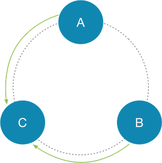

Streaming in Apache Cassandra powers host replacement, range movements, and cluster expansions. Streaming plays a crucial role in the cluster and as such its performance is key to not only the speed of the operations its used in but the cluster’s health generally. In Apache Cassandra 4.0, we have introduced an improved streaming implementation that reduces GC pressure and increases throughput several folds and are now limited, in some cases, only by the disk / network IO (See: CASSANDRA-14556).
To get an understanding of the impact of these changes, let’s first have a look at the current streaming code path. The diagram below illustrates the stream session setup when a node attempts to stream data from a peer. Let’s say, we have a 3 node cluster (Nodes A, B, C). Node C is being rebuilt and has to stream all data that it is responsible for from A & B. C setups a streaming session with each of it’s peers (See: CASSANDRA-4560 how Cassandra applies Ford Fulkerson to optimize streaming peers). It exchanges messages to request ranges and begins streaming data from the selected nodes.
During the streaming phase, A collects all SSTables that have partitions in the requested ranges. It streams each SSTable by serializing individual partitions. Upon receiving the partition, node C reifies the data in memory and then writes it to disk. This is necessary to accurately transfer partitions from all possible SSTables for the requested ranges. This streaming path generates garbage and could be avoided in scenarios where all partitions within the SSTable need to be transmitted. This is common when you’re using LeveledCompactionStrategy or have enabled partitioning SSTables by token range (See: CASSANDRA-6696), etc.
To solve this problem CASSANDRA-14556 adds a Zero Copy streaming path. This significantly speeds up the transfer of SSTables and reduces garbage and unnecessary object creation. It modifies the streaming path to add additional information into the streaming header and uses ZeroCopy APIs to transfer bytes to and from the network and disk. So now, an SSTable may be transferred using this strategy when Cassandra detects that a complete SSTable needs to be transferred.
How do I use this feature?
It just works. This feature is controlled using stream_entire_sstables in cassandra.yaml and is enabled by default. Even though this feature is enabled, it will respect the throttling limits as defined by stream_throughput_outbound_megabits_per_sec.
Impact
Cassandra can stream SSTables only bounded by the hardware limitations (Network and Disk IO). With this optimization, we hope to make Cassandra more performant and reliable.
Microbenchmarking this feature shows a marked improvement (higher is better). Block Stream Writers are the ZeroCopy writers and Partial Stream Writers are the existing writers.
| Benchmark | Mode | Cnt | Score | Error | Units |
|---|---|---|---|---|---|
ZeroCopyStreamingBenchmark.blockStreamReader |
thrpt |
10 |
20.119 |
± 1.300 |
ops/s |
ZeroCopyStreamingBenchmark.blockStreamWriter |
thrpt |
10 |
1339.672 |
± 352.242 |
ops/s |
ZeroCopyStreamingBenchmark.partialStreamReader |
thrpt |
10 |
0.590 |
± 0.135 |
ops/s |
ZeroCopyStreamingBenchmark.partialStreamWriter |
thrpt |
10 |
17.556 |
± 0.323 |
ops/s |
Conclusion
If you’re a Cassandra user, we would love to hear back from you. Please send us feedback via user Mailing List, Jira, or IRC (or any combination of the three).